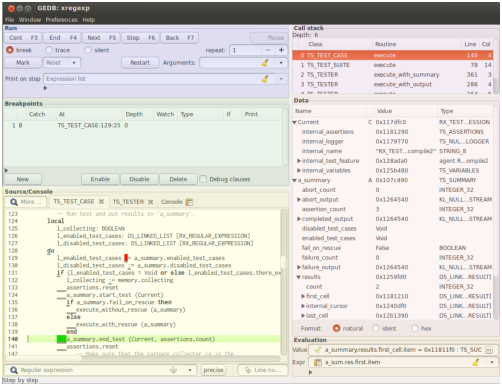

Figure 1: Overview of the main window (here, overlaid by artificial background colors). The Eiffel system shown in the screenshots has root class XREGEXP from cluster test/regexp/TESTGEN of the GOBO distribution.
The window contains a menubar on top, a statusbar on bottom and between them the parts named Run, Breakpoints, Source/Console on left half, Call stack, Data, and Evaluation on the right half. There are two more parts: the Source/Console part is actually two parts, Source shown in Fig. 1 and Console not shown, and the SQL select part to be shown separately. More windows can be opened from menu or by specific actions: a poor Source part called Feature window and several additional data windows.
The manual will describe the parts in the in the order from left to right and within each half from top to bottom.
Parts Breakpoints, Source, and SQL select contain fields to enter a class or type name. This is done via special text entries: a regular expression for the class or type name is to be entered, a combobox opens showing the matching classes or types, one can select from the combobox when this becomes convenient. While class names never include generic parameters a type name may contain actual generic parameters, in this case the opening bracket has to be escaped during input by a backslash since the bracket is a special symbol of regular expressions (the latter meaning takes precedence during input).
Parts Run, Breakpoints, SQL select, and Evaluation, and the Alias definition window contain special fields for entering expressions. The format of valid expressions is described in Sec. 4, there is also described how the expressions are validated. To most of such fields a restricted history is accompanied storing previously entered expressions. These can be shown and selected from by clicking the button on the field’s right end.
If a part contains a field for entering expressions it contains also a so-called Expander widget close to this field (several of those fields in the same part share the Expander), here consisting of two text lines. The first line is generally up to a leading expand/compress icon empty while the second line is hidden (clicking the icon shows and hides the second line). If a validation error occurs then the first line contains an error description and the second (now made visible) contains the expression in question showing in red the part where the error has been detected. In other words, this is the debugger’s way to issue error massages, the heavy way of opening a dialogue window is avoided.